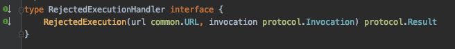

前言
Apache Dubbo是由阿里开源的一个RPC框架，除了基本的RPC功能以外，还提供了一整套的服务治理相关功能。目前它已经是Apache基金会下的顶级项目。
而dubbogo则是dubbo的go语言实现。
最近在dubbogo的todo list上发现，它还没有实现TPS Limit的模块，于是就抽空实现了这个部分。
TPS limit实际上就是限流，比如说限制一分钟内某个接口只能访问200次，超过这个次数，则会被拒绝服务。在Dubbo的Java版本上，只有一个实现，就是DefaultTPSLimiter。
DefaultTPSLimiter是在服务级别上进行限流。虽然dubbo的官方文档里面声称可以在method级别上进行限流，但是我看了一下它的源码，实际上这个是做不到的。当然，如果自己通过实现Filter接口来实现method级别的限流，那么自然是可以的——这样暴露了dubboJava版本实现的另外一个问题，就是dubbo的TpsLimitFilter实现，是不允许接入自己TpsLimiter的实现的。这从它的源码也可以看出来：

它直接写死了TpsLimiter的实现。
这个实现的目前只是合并到了develop上，等下次发布正式版本的时候才会发布出来。
Github: https://github.com/apache/dubbo-go/pull/237
设计思路
于是我大概参考了一下dubbo已有的实现，做了一点改进。
dubbo里面的核心抽象是TpsLimiter接口。TpsLimitFilter只是简单调用了一下这个接口的方法而已：

这个抽象是很棒的。但是还欠缺了一些抽象。
实际上，一个TPS Limit就要解决三个问题：
- 对什么东西进行
limit。比如说，对服务进行限流，或者对某个方法进行限流，或者对IP进行限流，或者对用户进行限流； - 如何判断已经
over limit。这是从算法层面上考虑，即用什么算法来判断某个调用进来的时候，已经超过配置的上限了； - 被拒绝之后该如何处理。如果一个请求被断定为已经
over limit了，那么该怎么处理；
所以在TpsLimiter接口的基础上，我再加了两个抽象：



TpsLimiter对应到Java的TpsLimiter，两者是差不多。在我的设想里面，它既是顶级入口，还需要承担解决第一个问题的职责。
而TpsLimitStrategy则是第二个问题的抽象的接口定义。它代表的是纯粹的算法。该接口完全没有参数，实际上，所有的实现需要维护自身的状态——对于大部分实现而言，它大概只需要获取一下系统时间戳，所以不需要参数。
最后一个接口RejectedExecutionHandler代表的是拒绝策略。在TpsLimitFilter里面，如果它调用TpsLimiter的实现，发现该请求被拒绝，那么就会使用该接口的实现来获取一个返回值，返回给客户端。
实现
其实实现没太多好谈的。不过有一些微妙的地方，我虽然在代码里面注释了，但是我觉得在这里再多说一点也是可以的。
首先提及的就是拒绝策略RejectedExecutionHandler，我就是提供了一种实现，就是随便log了一下，什么都没做。因为这个东西是强业务相关的，我也不能提供更加多的通用的实现。
方法与服务双重支持的TpsLimiter
TpsLimiter我只有一个实现，那就是MethodServiceTpsLimiterImpl。它就是根据配置，如果方法级别配置了参数，那么会在方法级别上进行限流。否则，如果在服务级别（ServiceKey）上有配置，那么会在服务级别进行限流。
举个最复杂的例子：服务A限制100，有四个方法，方法M1配置限制40，方法M2和方法M3无配置，方法M4配置限制-1：那么方法M1会单独限流40；M2和M3合并统计，被限制在100；方法M4则会被忽略。
用户可以配置具体的算法。比如说使用我接下来说的，我已经实现的三种实现。
FixedWindow和ThreadSafeFixedWindow
FixedWindow直接对应到Java的DefaultTpsLimiter。它采用的是fixed-window算法：比如说配置了一分钟内只能调用100次。假如从00:00开始计时，那么00:00-01:00内，只能调用100次。只有到达01:00，才会开启新的窗口01:00-02:00。如图：


这里有一个很有意思的地方。就是这个实现，是一个几乎线程安全但是其实并不是线程安全的实现。
在所有的实现里面，它是最为简单，而且性能最高的。我在衡量了一番之后，还是没把它做成线程安全的。事实上，Java版本的也不是线程安全的。
它只会在多个线程通过第67行的检测之后，才会出现并发问题，这个时候就不是线程安全了。但是在最后的return语句中，那一整个是线程安全的。它因为不断计数往上加，所以多个线程同时跑到这里，其实不会有什么问题。
现在我要揭露一个最为奇诡的特性了：并发越高，那么这个race condition就越严重，也就是说越不安全。
但是从实际使用角度而言，有极端TPS的还是比较少的。对于那些TPS只有几百每秒的，是没什么问题的。
为了保持和dubbo一致的特性，我把它作为默认的实现。
此外，我还为它搞了一个线程安全版本，也就是ThreadSafeFixedWindowTpsLimitStrategyImpl，只是简单的用sync封装了一下，可以看做是一个Decorator模式的应用。
如果强求线程安全，可以考虑使用这个。
SlidingWindow
这是我比较喜欢的实现。它跟网络协议里面的滑动窗口算法是一毛一样的。

具体来说，假如我设置的同样是一分钟1000次，它统计的永远是从当前时间点往前回溯一分钟内，已经被调用了多少次。如果这一分钟内，调用次数没超过1000，请求会被处理，如果已经超过，那么就会拒绝。
我再来描述一下，SldingWindow和FixedWindow两种算法的区别。这两者很多人会搞混。假如当前的时间戳是00:00，两个算法同时收到了第一个请求，开启第一个时间窗口。
那么FixedWindow就是00:00-01:00是第一个窗口，接下来依次是01:00-02:00, 02:00-03:00, ...。当然假如说01:00之后的三十秒内都没有请求，在01:31又来了一个请求，那么时间窗口就是01:31-02:31。
而SildingWindow则没有概念。假如在01:30收到一个请求，那么SlidingWindow统计的则是00:30-01:30内有没有达到1000次。它永远计算的都是接收到请求的那一刻往前回溯一分钟的请求数量。
如果还是觉得有困难，那么简单来说就是FixedWindow往后看一分钟，SlidingWindow回溯一分钟。
这个说法并不严谨，只是为了方便理解。
在真正写这个实现的时候，我稍微改了一点点：

我用了一个队列来保存每次访问的时间戳。一般的写法，都是请求进来，先把已经不在窗口时间内的时间戳删掉，然后统计剩下的数量，也就是后面的slow path的那一堆逻辑。
但是我改了的一点是，我进来直接统计队列里面的数量——也就是请求数量，如果都小于上限，那么我可以直接返回true。即quick path。
这种改进的核心就是：我只有在检测到当前队列里面有超过上限数量的请求数量时候，才会尝试删除已经不在窗口内的时间戳。
这其实就是，是每个请求过来，我都清理一下队列呢？还是只有队列元素超出数量了，我才清理呢？我选择的是后者。
我认为这是一种改进……当然从本质上来说，整体开销是没有减少的。
算法总结
无论是FixedWindow算法还是SlidingWindow算法都有一个固有的缺陷，就是这个时间窗口难控制。
我们设想一下，假如说我们把时间窗口设置为一分钟，允许1000次调用。然而，在前十秒的时候就调用了1000次。在后面的五十秒，服务器虽然将所有的请求都处理完了，然是因为窗口还没到新窗口，所以这个时间段过来的请求，全部会被拒绝。

解决的方案就是调小时间窗口，比如调整到一秒。但是时间窗口的缩小，会导致FixedWindow算法的race condition情况加剧。SlidingWindow也会受影响，但是影响要小很多。
那些没有实现的
基于特定业务对象的限流
举例来说，某些特殊业务用的针对用户ID进行限流和针对IP进行限流，我就没有在dubbogo里面实现。有需要的可以通过实现TpsLimiter接口来完成。
全局TPS limit
这篇文章之前讨论的都是单机限流。如果全局限流，比如说针对某个客户，它购买的服务是每分钟调用100次，那么就需要全局限流——虽然这种case都不会用Filter方案，而是另外做一个API接入控制。
比如说，很常用的使用Redis进行限流的。针对某个客户，一分钟只能访问100次，那我就用客户ID做key，value设置成List，每次调用过来，随便塞一个值进去，设置过期时间一分钟。那么每次统计只需要统计当前key的存活的值的数量就可以了。
这种我也没实现，因为好像没什么需求。国内讨论TPS limit都是讨论单机TPS limit比较多。
这个同样可以通过实现TpsLimiter接口来实现。
Leaky Bucket算法
这个本来可以是TpsLimitStrategy的一种实现的。后来我觉得，它其实并没有特别大的优势——虽然号称可以做到均匀，但是其实并做不到真正的均匀。通过调整SlidingWindow的窗口大小，是可以接近它宣称的均匀消费的效果的。比如说调整到一秒，那其实就已经很均匀了。而这并不会带来多少额外的开销。